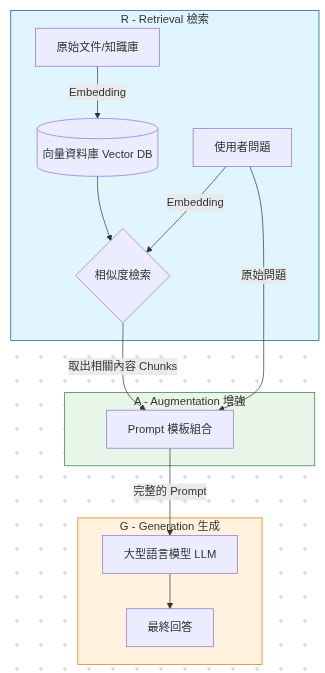
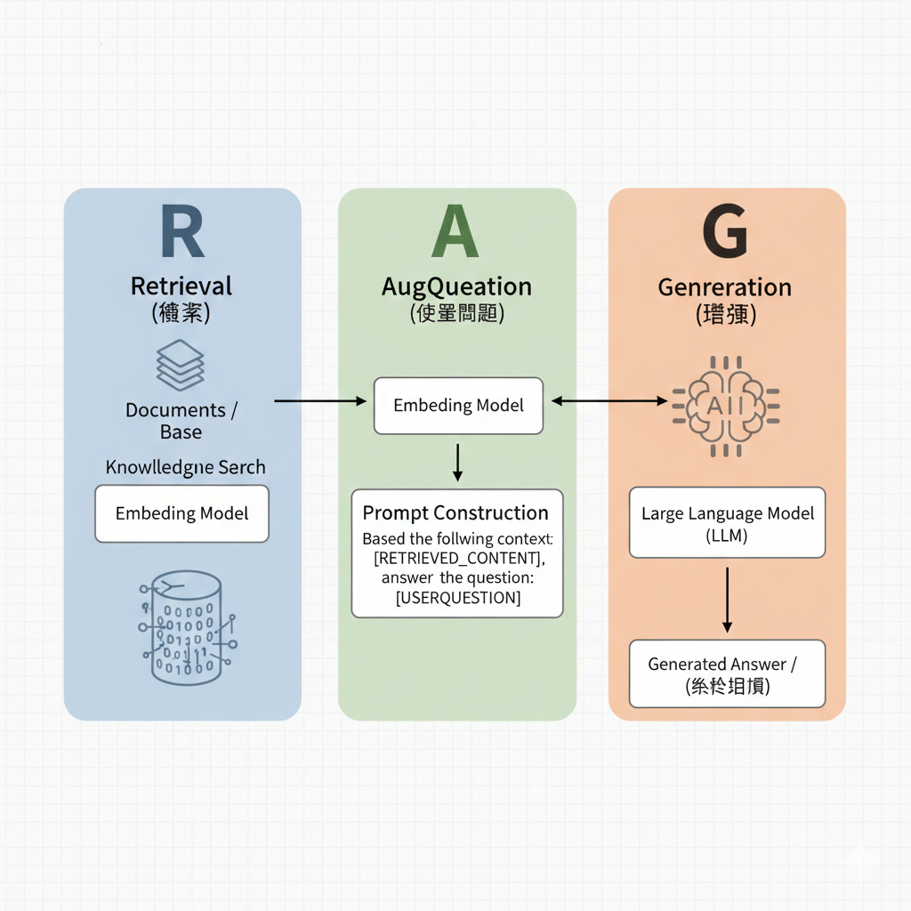
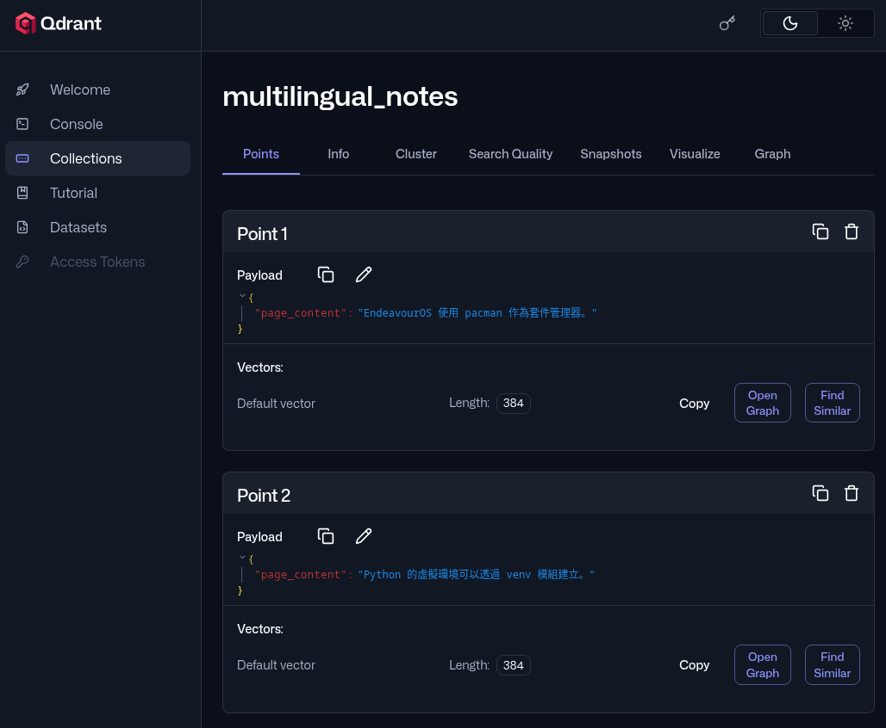

# 架構
RAG（Retrieval-Augmented Generation; 檢索增強生成）
-
R - Retrieval (檢索)
資料端： 原始文件經過 Embedding Model 轉為向量，存入 Vector DB。
查詢端： 使用者問題同樣轉為向量，去資料庫進行相似度檢索（Similarity Search）。 -
A - Augmentation (增強)
組合： 將檢索出來的「外部知識（Context）」與「原始問題（Query）」放入一個 Prompt Template 中。
任務： 這個動作是為了讓 LLM 擁有它原本訓練數據中沒有的特定資訊。 -
G - Generation (生成)
輸出： 將加強過的 Prompt 丟給 LLM。
回覆： LLM 根據給定的參考資料產出精準的答案。
我理解的架構圖
Gemini 畫的啥玩意兒

# 需求
- embed model：將聲音、圖片、影片、文字等轉成向量數值使用
- vector db：儲存向量數據及對應內容
- LLM：生成式 AI
# Embedding
使用 Sentence-Transformers 載入 embed model，將文字轉成高維度向量特徵。
安裝依賴套件
pip install sentence-transformers# 加上 huggingface 的鏡像站點環境變數，避免下載模型太慢
import os
os.environ["HF_ENDPOINT"] = "https://hf-mirror.com"
from sentence_transformers import SentenceTransformer
# 載入模型
model = SentenceTransformer('all-MiniLM-L6-v2')
# 準備文字
sentences = ["這是一段測試文字", "EndeavourOS 開發環境"]
# 取得 Feature Vector
embeddings = model.encode(sentences)
# 查看 Shape [句子數量, 每個句子的維度]
# 輸出會是 (2, 384)，代表 2 個句子，每個句子 384 維, 是 all-MiniLM-L6-v2 模型的特徵維度。
print(f"向量形狀 (embeddings.shape): {embeddings.shape}")
# 查看具體數值 (只印出第一句的前 5 個特徵值作為範例)
print(f"第一句的前 5 個特徵值: {embeddings[0][:5]}")
# 執行結果
# 向量形狀 (embeddings.shape): (2, 384)
# 第一句的前 5 個特徵值: [0.03097137 0.09432378 0.04806018 0.02745436 0.02937624]- 除了 Sentence-Transformers 也可以用 Ollama 載入 embed model，呼叫 Ollama API 取得向量值
- 選對模型很重要，改成
paraphrase-multilingual-MiniLM-L12-v2模型，對中文理解程度比較高 - 聲音、圖片、影片、文字轉為高維度向量特徵，這個過程叫
embedding
# Vector DB
將向量與內容存入 vector db，後續可以搜尋跟問題相似度高的內容，這裡選用 Qdrant
安裝依賴套件
pip install sentence-transformers qdrant-client可以用 docker 或 podman 啟動 Qdrant
podman run -p 6333:6333 -p 6334:6334 \
-v $(pwd)/qdrant_storage:/qdrant/storage:z \
docker.io/qdrant/qdrantimport os
os.environ["HF_ENDPOINT"] = "https://hf-mirror.com"
from sentence_transformers import SentenceTransformer
from qdrant_client import QdrantClient
from qdrant_client.models import Distance, VectorParams, PointStruct
# 載入 Embed Model, 改用 paraphrase-multilingual-MiniLM-L12-v2 對中文理解程度比較好
model = SentenceTransformer('paraphrase-multilingual-MiniLM-L12-v2')
# 建立 Qdrant 客戶端
client = QdrantClient("127.0.0.1", port=6333)
# collection 不存在則建立
# size 為 384, 必須跟 embed model 維度搭配
collection_name = "multilingual_notes"
if not client.collection_exists(collection_name):
client.create_collection(
collection_name=collection_name,
vectors_config=VectorParams(size=384, distance=Distance.COSINE),
)
# 準備寫入的資料
documents = [
{"id": 1, "text": "EndeavourOS 使用 pacman 作為套件管理器。"},
{"id": 2, "text": "Python 的虛擬環境可以透過 venv 模組建立。"},
{"id": 3, "text": "Vector Database 負責儲存高維度的向量數據。"},
{"id": 4, "text": "等春節特賣叫隔壁王叔叔買給你"},
{"id": 5, "text": "牛仔褲特賣會在下週末舉行，別忘了去看看！"},
]
# 批次產生每個內容的向量, 利用 GPU 加速批次處理省效能
texts = [doc["text"] for doc in documents]
vectors = model.encode(texts)
# 建立向量與內容資料點
points = []
for i, doc in enumerate(documents):
points.append(PointStruct(
id=doc["id"],
vector=vectors[i].tolist(),
payload={"page_content": doc["text"]}
))
# 新增資料點到 Qdrant
client.upsert(collection_name=collection_name, points=points)
# 語義搜尋測試
query_text = "媽媽我好想要一台 Steam Deck"
query_vector = model.encode(query_text).tolist()
search_result = client.query_points(
collection_name=collection_name,
query=query_vector,
# 搜尋相似度最高的 5 筆
limit=5
).points
# 顯示搜尋結果
print(f"--- 針對「{query_text}」搜尋到前 {len(search_result)} 筆相關資料 ---")
for i, res in enumerate(search_result):
content = res.payload['page_content']
score = res.score
print(f"{i+1}. [分數: {score:.4f}] {content}")
# 執行結果
# --- 針對「媽媽我好想要一台 Steam Deck」搜尋到前 5 筆相關資料 ---
# 1. [分數: 0.2213] 等春節特賣叫隔壁王叔叔買給你
# 2. [分數: 0.1929] 牛仔褲特賣會在下週末舉行，別忘了去看看！
# 3. [分數: -0.0284] Python 的虛擬環境可以透過 venv 模組建立。
# 4. [分數: -0.0446] Vector Database 負責儲存高維度的向量數據。
# 5. [分數: -0.0561] EndeavourOS 使用 pacman 作為套件管理器。- 餘弦相似度: 數值在 -1 ~ 1 之間 分數越高越好, 代表語義越接近。可以調整 distance=Distance.COSINE 修改成其他演算法。
- Vector db 選型須根據使用的 embed model，需要可以儲存該 model 使用的維度
- 可以建立不同維度的 collection
Qdrant 有 web 界面

# RAG
要進行 RAG 還差 LLM (Large Language Model), LLM 屬於 RAG 的 G (Generate), 這邊使用 Ollama 載入 llama3
安裝依賴套件
pip install langchain-huggingface langchain-qdrant langchain-ollama langchain-core在 Arch Linux 安裝 Ollama
yay -S ollama-cuda
sudo systemctl start ollama
# 檢查是否啟用成功
systemctl is-active ollama
# 載入 llama3 模型
ollama run llama3import os
# 鏡像加速（如果模型已下載則會自動跳過）
os.environ["HF_ENDPOINT"] = "https://hf-mirror.com"
from langchain_huggingface import HuggingFaceEmbeddings
from langchain_qdrant import QdrantVectorStore
from langchain_ollama import ChatOllama
from langchain_core.prompts import ChatPromptTemplate
from langchain_core.runnables import RunnablePassthrough
from langchain_core.output_parsers import StrOutputParser
# 統一模型名稱，要跟寫入 vector db 時使用的模型一致
EMBEDDING_MODEL_NAME = "paraphrase-multilingual-MiniLM-L12-v2"
embeddings = HuggingFaceEmbeddings(model_name=EMBEDDING_MODEL_NAME)
# Retrieval - 用於檢索的向量資料庫
vector_store = QdrantVectorStore.from_existing_collection(
embedding=embeddings,
collection_name="multilingual_notes",
url="http://127.0.0.1:6333"
)
# Augmentation - 定義詢問 LLM 的 prompt 模板
template = """你是一個基於本地知識庫的 AI 助手。
請根據以下提供的「參考資料」回答「問題」。
如果參考資料中沒有相關答案，請誠實告知你不知道。
[參考資料]:
{context}
[問題]:
用中文回答 `{question}`
"""
prompt = ChatPromptTemplate.from_template(template)
# 檢索設定, 檢索相似度最高的 2 筆資料
retriever = vector_store.as_retriever(search_kwargs={"k": 2})
# 文檔格式化函數
def format_docs(docs):
return "\n".join(doc.page_content for doc in docs)
# Generation - 使用的生成模型
llm = ChatOllama(model="llama3", base_url="http://localhost:11434")
# 構建 RAG 鏈, 執行：搜尋 Qdrant -> 填入模板 -> 丟給 Llama3 -> 輸出文字
rag_chain = (
{
"context": retriever | format_docs, # 從向量庫檢索並格式化文檔
"question": RunnablePassthrough() # 原樣傳遞用戶問題
}
| RunnablePassthrough.assign(
# prompt - 接收 {context, question}，生成格式化的提示詞
# llm - 將提示詞發送給 Llama3 模型，得到 AI 回答
# StrOutputParser() - 將 LLM 的輸出（通常是個 AIMessage 對象）轉換成純文字字符串
# | 是 LangChain 的 LCEL 語法
answer=prompt | llm | StrOutputParser()
)
)
# 執行對話測試
if __name__ == "__main__":
query = "EndeavourOS 適合什麼樣的開發者？"
print(f"\n提問：{query}")
# R - Retrieval：從向量庫檢索相關文檔
print("\n----------R Retrieval 檢索階段----------")
docs = retriever.invoke(query)
formatted_context = format_docs(docs)
print(f"檢索到的參考資料（{len(docs)} 筆）：\n{formatted_context}")
# A - Augmentation：將檢索結果填入提示詞
print("\n----------A Augmentation 增強階段----------")
augmented_prompt = prompt.invoke({"context": formatted_context, "question": query})
print(f"生成的提示詞：\n{augmented_prompt.to_string()}")
# G - Generation：LLM 生成回答
print("\n----------G Generation 生成階段----------")
result = rag_chain.invoke(query)
print(f"AI 回答：\n{result['answer']}")
# 執行結果
# 提問：EndeavourOS 適合什麼樣的開發者？
# ----------R Retrieval 檢索階段----------
# 檢索到的參考資料（2 筆）：
# EndeavourOS 使用 pacman 作為套件管理器。
# Python 的虛擬環境可以透過 venv 模組建立。
# ----------A Augmentation 增強階段----------
# 生成的提示詞：
# Human: 你是一個基於本地知識庫的 AI 助手。
# 請根據以下提供的「參考資料」回答「問題」。
# 如果參考資料中沒有相關答案，請誠實告知你不知道。
# [參考資料]:
# EndeavourOS 使用 pacman 作為套件管理器。
# Python 的虛擬環境可以透過 venv 模組建立。
# [問題]:
# 用中文回答 `EndeavourOS 適合什麼樣的開發者？`
# ----------G Generation 生成階段----------
# AI 回答：
# 根據提供的參考資料，EndeavourOS 使用 pacman 作為套件管理器。因此，我們可以知道 EndeavourOS 是一種 Linux 發行版。
# 結論：EndeavourOS 适合 Linux 開發者的需求。- 如果原本用 A 模型建立的 db 後來想改 B 模型怎麼辦? 要進行 Re-indexing
- 後續可以增加避免幻覺機制，相似度閥值判定, 參考資料不足處理機制等等...